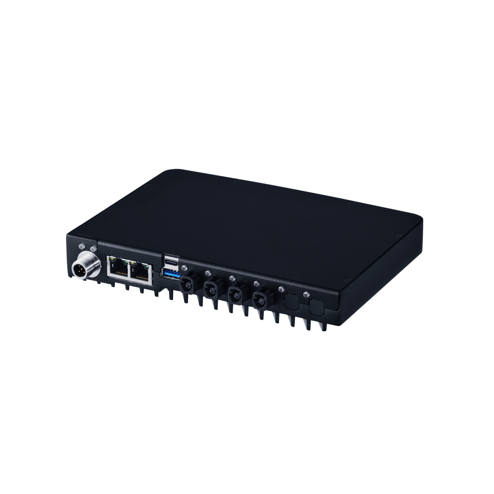
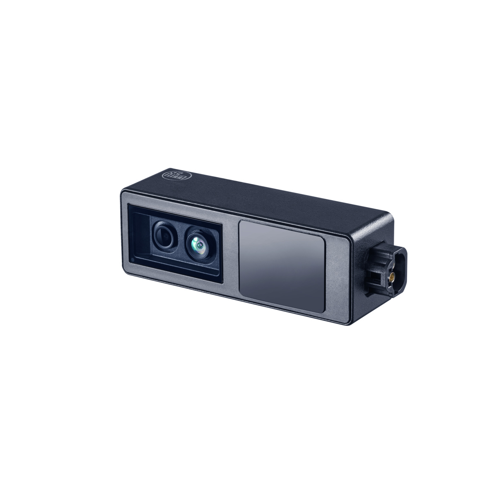
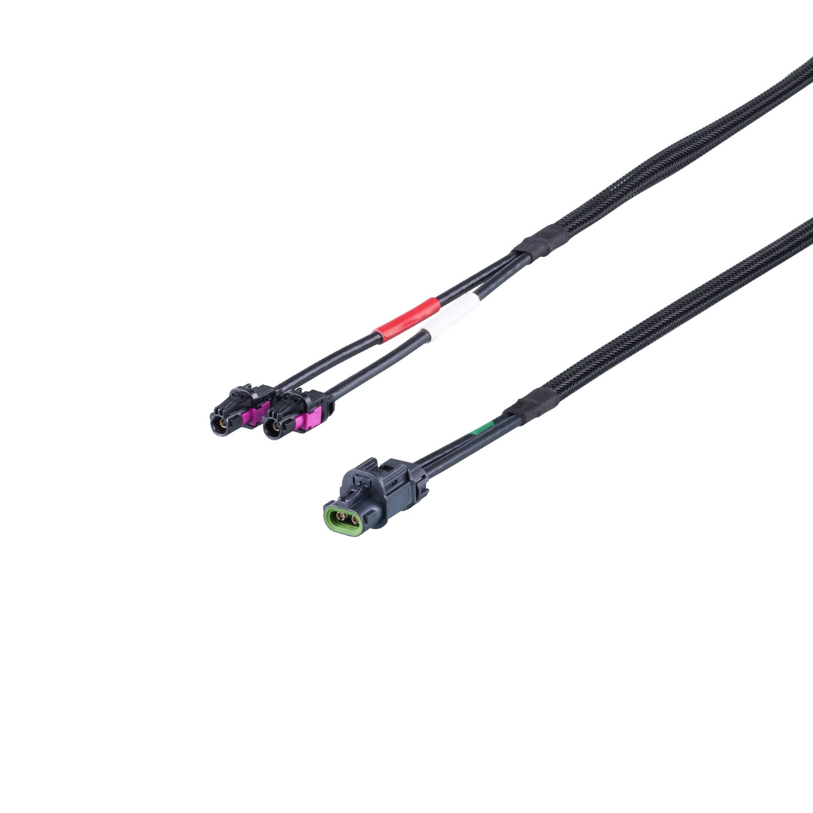
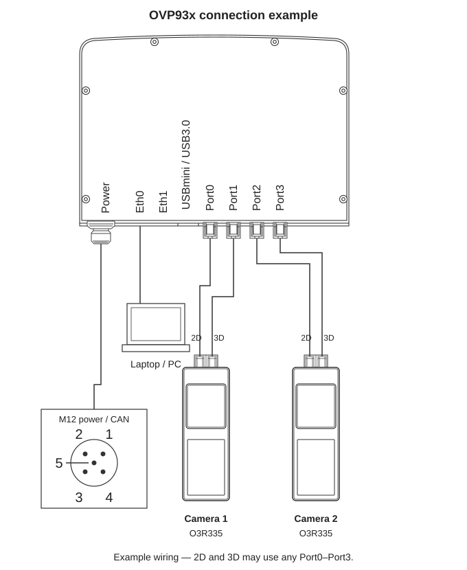

Getting started with the O3R
This guide walks you through setting up the O3R platform, from unboxing and wiring the hardware to choosing the software stack you will develop with.
Hardware unboxing
Before you start
Prepare the following O3R hardware:
Hardware |
Image |
Requirement |
|---|---|---|
OVP93x VPU |
 |
One VPU, such as the OVP930 or OVP931. See the available models and application licenses. |
O3R335 camera heads |
 |
One or more heads, depending on the camera streams required. The VPU has four camera ports; a head using both 2D and 3D occupies two ports. |
High-speed FAKRA Mini (HFM) cables |
 |
One suitable cable assembly per head. Use a dual connection for 2D and 3D, or a single connection for 3D only. The image shows the E3R100 dual cable. |


Also prepare the following power and network accessories:
Item |
Requirement |
|---|---|
Power supply |
A reliable power supply capable of providing at least 24 V / 5 A. Follow the power-supply guidance. |
Power/CAN cable |
An M12 connector cable for the VPU, such as EVC948. EVC706 is a non-CAN alternative. See the cable catalog. |
Ethernet cable |
A cable rated for 1 Gbit/s (Gigabit) communication. |
Power consumption
With maximum CPU/GPU load and four 3D heads at 20 fps, the system consumes up to 75 W / 3100 mA RMS in standard mode or 94 W / 3900 mA RMS in super mode. For example, in standard mode:
A VPU with one 3D head consumes 35 W / 1500 mA.
An ODS application with four 3D heads consumes 67 W / 2800 mA for the VPU and heads combined.
These are consumption figures, not power-supply ratings. See the power consumption tables and examples for the other configurations. See the mechanical integration guide for heat-dissipation requirements.
Connect the hardware
Before wiring the platform, review the O3R335 clearance definition and illustrations and the mounting examples when positioning the cameras.
Watch the wiring video or follow the steps below:
Disconnect the power supply before making electrical connections.
First, connect the heads to the VPU, as shown below:

Some example scenarios:
The diagram shows example 1. Any camera port can carry a 2D or 3D stream; adjacent ports do not need to use the same imager type.
Connection
Port 0
Port 1
Port 2
Port 3
example 1
camera 1 (2D)
camera 1 (3D)
camera 2 (2D)
camera 2 (3D)
example 2
camera 1 (2D)
camera 2 (2D)
camera 1 (3D)
camera 2 (3D)
example 3
camera 1 (3D)
camera 2 (3D)
camera 3 (3D)
camera 4 (3D)
Connect power to the VPU, the pins are defined as follows:
1 screen
2 24 V
3 GND
4 CAN +
5 CAN -
Connect the Ethernet cable,
Once all the connected cameras LEDs are green, the VPU is properly booted up.
That’s it!
Pick your favorite software stack
Once you’ve setup your O3R hardware properly following the unboxing steps above, it is time to get started on the software side. Multiple software stacks are available: pick your favorite one below and follow along.